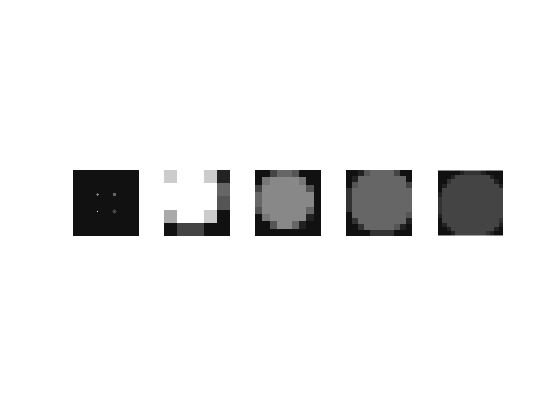

Contents
% demo_00_images_from_directory.m % authors: Brandon Nelson, Rongping Zeng % % This script is the first demonstrates how to use the Low Contrast % Detectability toole for multiple model observers on % pre-existing signal-present (sp) and signal absent (sa) image sets. % % This script uses the data provided in the Sample_Data/MITA_LCD folder % included in the repo.This example can readily be adapted to different % user data by replacing the `signal_absent` and `signal_present` % directories with your own files % It is recommended to run through each section of this script one at a % time by first highlighting a section (a section starts with `%%` at the % start of a line and ends with another set of `%%`) and running with % <ctrl> + <enter>
disp("demo_00_images_from_directory.m")
demo_00_images_from_directory.m
clear all; clc addpath(genpath('src')) if is_octave pkg load image pkg load tablicious end base_dir = 'Sample_Data/MITA_LCD'; signal_present_dir = fullfile(base_dir, 'dose_100', 'signal_present'); signal_absent_dir = fullfile(base_dir, 'dose_100', 'signal_absent'); file_extension = '.raw'; n_sp = length(dir(fullfile(signal_absent_dir, ['*',file_extension]))); n_sa = length(dir(fullfile(signal_absent_dir, ['*',file_extension]))); fprintf('signal present directory: %s: %d images found\n', signal_present_dir, n_sp); fprintf('signal absent directory: %s: %d images found\n', signal_absent_dir, n_sa);
signal present directory: Sample_Data\MITA_LCD\dose_100\signal_present: 10 images found signal absent directory: Sample_Data\MITA_LCD\dose_100\signal_absent: 10 images found
define your function for loading each image
e.g. TODO switch over to ITK headers (.mhd) still raw files but easieer to open in ImageJ, SLicer and other programs
header = mha_read_header(fullfile(base_dir, 'ground_truth.mhd')); offset_HU = 1000; xtrue = mhd_read_image(fullfile(base_dir, 'ground_truth.mhd')) - offset_HU; % input is a binary mask specifying signal known exactly (SKE) truth_masks = get_demo_truth_masks(xtrue); figure(1); subplot(1,5,1); imshow(xtrue, [-1 14]) for i=1:4 subplot(1, 5,i+1) truth_mask = truth_masks(:,:,i); crop_mask = get_ROI_from_truth_mask(truth_mask, xtrue); imshow(crop_mask,[-1, 14]); end
make signal present and signal absent stacks for MO analysis
sp_raw_array = mhd_read_image(fullfile(signal_present_dir, 'signal_present.mhd')); sa_raw_array = mhd_read_image(fullfile(signal_absent_dir, 'signal_absent.mhd')); sp_imgs = get_ROI_from_truth_mask(truth_mask, sp_raw_array); sa_imgs = get_ROI_from_truth_mask(truth_mask, sa_raw_array); % split into train and test [sa_train, sa_test, sp_train, sp_test] = train_test_split(sa_imgs, sp_imgs);
run model observers as functions
observers = {"conv_LG_CHO_2d", "DOG_CHO_2d", "Gabor_CHO_2d", "LG_CHO_2d", "NPWE_2d"}
observer_name = observers{1};
observer_function = str2func(observer_name);
insert_r = get_insert_radius(truth_mask);
[auc, snr, chimg, tplimg, meanSP, meanSA, meanSig, kch, t_sp, t_sa] = ...
observer_function(sa_train, sp_train, sa_test, sp_test, insert_r/1.5, 5, 0);
observer = LG_CHO_2D(2/3*insert_r);
lg_res = observer.perform_study(sa_train, sp_train, sa_test, sp_test);
observers =
1×5 cell array
Columns 1 through 3
{["conv_LG_CHO_2d"]} {["DOG_CHO_2d"]} {["Gabor_CHO_2d"]}
Columns 4 through 5
{["LG_CHO_2d"]} {["NPWE_2d"]}
ROC CURVE DATA
--------------------------------------------------------------------------------
Cut-off point Sensivity Specificity
--------------------------------------------------------------------------------
ROC CURVE ANALYSIS
--------------------------------------------------------------------------------
AUC S.E. 95% C.I. Comment
--------------------------------------------------------------------------------
0.38000 0.18502 0.01738 0.74262 Failed test - less than chance
--------------------------------------------------------------------------------
Standardized AUC 1-tail p-value
-0.6486 0.741699 The area is not statistically greater than 0.5
ROC CURVE DATA
--------------------------------------------------------------------------------
Cut-off point Sensivity Specificity
--------------------------------------------------------------------------------
ROC CURVE ANALYSIS
--------------------------------------------------------------------------------
AUC S.E. 95% C.I. Comment
--------------------------------------------------------------------------------
0.38000 0.18502 0.01738 0.74262 Failed test - less than chance
--------------------------------------------------------------------------------
Standardized AUC 1-tail p-value
-0.6486 0.741699 The area is not statistically greater than 0.5
run model observers as class instances
observer = DOG_CHO_2D(); dog_res = observer.perform_study(sa_train, sp_train, sa_test, sp_test); fprintf('LG CHO auc: %f\n', lg_res.auc) fprintf('DOG CHO auc: %f\n', dog_res.auc)
ROC CURVE DATA -------------------------------------------------------------------------------- Cut-off point Sensivity Specificity -------------------------------------------------------------------------------- ROC CURVE ANALYSIS -------------------------------------------------------------------------------- AUC S.E. 95% C.I. Comment -------------------------------------------------------------------------------- 0.60000 0.18701 0.23347 0.96653 Poor test -------------------------------------------------------------------------------- Standardized AUC 1-tail p-value 0.5347 0.296415 The area is not statistically greater than 0.5 LG CHO auc: 0.380000 DOG CHO auc: 0.600000